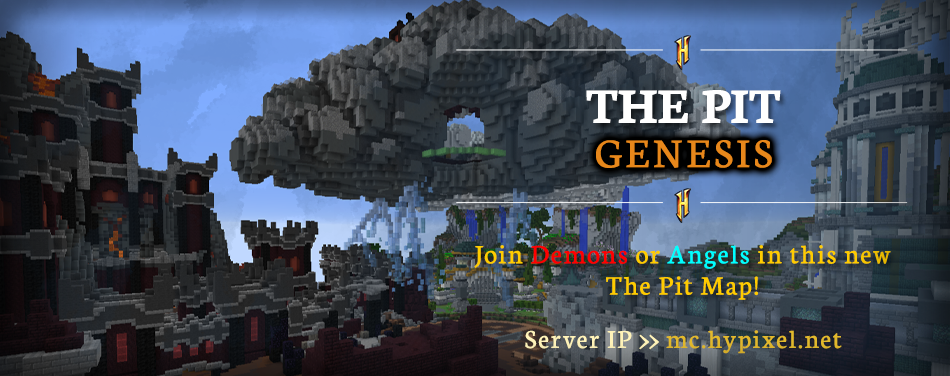

|
The Pit 0.4.2 - Genesis Map
|
|  |
| A screenshot of the new Genesis map. |
| Release Date | Mar 06th, 2020 |
Forums Approval*Forums approval is based on the number of positive reactions on the update's forum post divided by the number of total reactions.
Reactions only count if they were added in the first month of the post being up. | 99% |
| Forums Author | Minikloon |
| ← Quick Patch —
Release!
→
|
The Pit 0.4.2 was the tenth major version of the Hypixel Pit. It introduced the Genesis map, Factions, the Inventory Management renown upgrade, balance changes, gameplay changes, and bug fixes.
The Genesis map was intended to be the "inverse" of the Castle map, featuring a "tighter map with more center pit action", and "about 20% less playable space than a regular map". The map is themed around a clash between angelic and demonic structures, with its primary feature, Factions, reflecting this by allowing players to pledge allegiance to the Angel or Demon factions to earn rewards from kills.
The Inventory Management renown upgrade was also introduced, allowing players to upgrade the size of their Ender Chest from 3 to up to 6 rows for a large sum of renown.
Balance changes:
- (↑) Kung Fu Knowledge perk's base damage increased from (3.55♥︎ → 3.7♥︎).
- (↑) Phoenix II enchantment's damage boost increased from (+0% → +10%).
- (~) Yummy Bread instant heal reduced from (4♥︎ → 1♥︎), but now grants Regeneration III (0:03.6).
- (↓) Dark Pants are now enchanted with fewer lives on average.
Gameplay changes:
- Players are no longer given an iron sword or bow upon respawning if one already exists in their inventory.
- Players can no longer receive the Barbarian axe in Spire.
- Players can no longer receive Tasty Soup for assists in Spire.
- The Wolf Pack enchantment is disabled in Rage Pit.
- The contract for killing players with the void is removed from the pool of possible contracts.[bug]The forums article states that the contract would be available on the Elements map, however, this was not the case.
Bug fixes:
- Last Stand enchantment's description now reflects the cooldown added in the previous update.
- Fixed typos, coloring, and mislabeling in the descriptions for Sprint Drain, Bruiser, and Divine Intervention.
- The Trash Panda enchantment's menu can no longer open the Mystic Well when the user does not have it unlocked.
- Fixed a slot in the trade menu being unusable.
- Fixed being able to duplicate powerups in the Blockhead event, and "fixed Block Head in general"[unclear].
- Fixed formatting for the text that appears in the Beast event when gaining gold for being the beast for a certain amount of time.
- Moved Fishing Club in the renown menu to be with the other Prestige III upgrades.